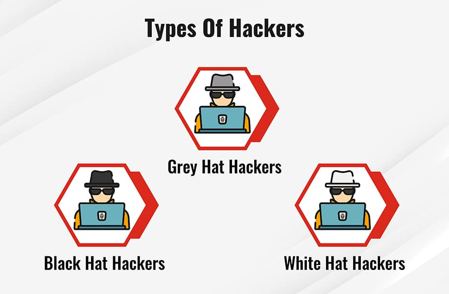

In today's age that is highly dependent on technology and the Internet, digital matters have become endless in our daily lives. With the development of technology, new challenges have also emerged on the ground of cyber security, and among these challenges the problem of electronic penetration (Hacking) stands out.
H a c k i n g
A commonly used hacking definition is the act of compromising digital devices and networks through unauthorized access to an account or computer system. Hacking is not always a malicious act, but it is most commonly associated with illegal activity and data theft by cyber criminals. But what is hacking in a cyber security context? Hacking in cyber security refers to the misuse of devices like computers, smartphones, tablets, and networks to cause damage to or corrupt systems, gather information on users, steal data and documents, or disrupt data-related activity. A traditional view of hackers is a lone rogue programmer who is highly skilled in coding and modifying computer software and hardware systems. But this narrow view does not cover the true technical nature of hacking. Hackers are increasingly growing in sophistication, using stealthy attack methods designed to go completely unnoticed by cybersecurity software and IT teams. They are also highly skilled in creating attack vectors that trick users into opening malicious attachments or links and freely giving up their sensitive personal data. As a result, modern-day hacking involves far more than just an angry kid in their bedroom. It is a multibillion-dollar industry with extremely sophisticated and successful techniques.
History of Hacking
Hacking first appeared as a term in the 1970s but became more popular through the next decade. An article in a 1980 edition of Psychology Today ran the headline “The Hacker Papers” in an exploration of computer usage's addictive nature. Two years later, two movies, Tron and WarGames, were released, in which the lead characters set about hacking into computer systems, which introduced the concept of hacking to a wide audience and as a potential national security risk. Sure enough, later that year, a group of teenagers cracked the computer systems of major organizations like Los Alamos National Laboratory, Security Pacific Bank, and Sloan-Kettering Cancer Center. A Newsweek article covering the event became the first to use the word “hacker” in the negative light it now holds. This event also led Congress to pass several bills around computer crimes, but that did not stop the number of high-profile attacks on corporate and government systems. Of course, the concept of hacking has spiraled with the release of the public internet, which has led to far more opportunities and more lucrative rewards for hacking activity. This saw techniques evolve and increase in sophistication and gave birth to a wide range of types of hacking and hackers.
Types of Hacking
There are typically four key drivers that lead to bad actors hacking websites or systems: (1) financial gain through the theft of credit card details or by defrauding financial services, (2) corporate espionage, (3) to gain notoriety or respect for their hacking talents, and (4) state-sponsored hacking that aims to steal business information and national intelligence. On top of that, there are politically motivated hackers—or hacktivists—who aim to raise public attention by leaking sensitive information, such as Anonymous, LulzSec, and WikiLeaks. A few of the most common types of hackers that carry out these activities involve:
Black Hat Hackers
black hat hackers are the "bad guys" of the hacking scene. They go out of their way to discover vulnerabilities in computer systems and software to exploit them for financial gain or for more malicious purposes, such as to gain reputation, carry out corporate espionage, or as part of a nation-state hacking campaign. These individuals’ actions can inflict serious damage on both computer users and the organizations they work for. They can steal sensitive personal information, compromise computer and financial systems, and alter or take down the functionality of websites and critical networks.
White Hat Hackers
White hat hackers can be seen as the “good guys” who attempt to prevent the success of black hat hackers through proactive hacking . They use their technical skills to break into systems to assess and test the level of network security , also known as ethical hacking. This helps expose vulnerabilities in systems before black hat hackers can detect and exploit them. The techniques white hat hackers use are similar to or even identical to those of black hat hackers, but these individuals are hired by organizations to test and discover potential holes in their security defenses.
Grey Hat Hackers
Grey hat hackers sit somewhere between the good and the bad guys. Unlike black hat hackers, they attempt to violate standards and principles but without intending to do harm or gain financially. Their actions are typically carried out for the common good. For example, they may exploit a vulnerability to raise awareness that it exists, but unlike white hat hackers, they do so publicly. This alerts malicious actors to the existence of the vulnerability.

Content about Hacking :
Devices Most Vulnerable To Hacking
Smart Devices
Smart devices, such as smartphones, are lucrative targets for hackers. Android devices, in particular, have a more open-source and inconsistent software development process than Apple devices, which puts them at risk of data theft or corruption. However, hackers are increasingly targeting the millions of devices connected to the Internet of Things (IoT) .
Webcams
Webcams built into computers are a common hacking target, mainly because hacking them is a simple process. Hackers typically gain access to a computer using a Remote Access Trojan (RAT) in rootkit malware, which allows them to not only spy on users but also read their messages, see their browsing activity, take screenshots, and hijack their webcam.
Routers
Hacking routers enables an attacker to gain access to data sent and received across them and networks that are accessed on them. Hackers can also hijack a router to carry out wider malicious acts such as distributed denial-of-service (DDoS) attacks, Domain Name System (DNS) spoofing , or cryptomining.
Email
Email is one of the most common targets of cyberattacks . It is used to spread malware and ransomware and as a tactic for phishing attacks, which enable attackers to target victims with malicious attachments or links.
Jailbroken Phones
Jailbreaking a phone means removing restrictions imposed on its operating system to enable the user to install applications or other software not available through its official app store. Aside from being a violation of the end-user’s license agreement with the phone developer, jailbreaking exposes many vulnerabilities. Hackers can target jailbroken phones, which allows them to steal any data on the device but also extend their attack to connected networks and systems.
Prevention from Getting Hacked
There are several key steps and best practices that organizations and users can follow to ensure they limit their chances of getting hacked.Software Update
Hackers are constantly on the lookout for vulnerabilities or holes in security that have not been seen or patched. Therefore, updating software and operating systems are both crucial to preventing users and organizations from getting hacked. They must enable automatic updates and ensure the latest software version is always installed on all of their devices and programs.
Use Unique Passwords for Different Accounts
Weak passwords or account credentials and poor password practices are the most common cause of data breaches and cyberattacks. It is vital to not only use strong passwords that are difficult for hackers to crack but also to never use the same password for different accounts. Using unique passwords is crucial to limiting hackers’ effectiveness.
HTTPS Encryption
Spoofed websites are another common vehicle for data theft, when hackers create a scam website that looks legitimate but will actually steal the credentials that users enter. It is important to look for the Hypertext Transfer Protocol Secure (HTTPS) prefix at the start of a web address. For example: https://www.fortinet.com.
Avoid Clicking on Ads or Strange Links
Advertisements like pop-up ads are also widely used by hackers. When clicked, they lead the user to inadvertently download malware or spyware onto their device. Links should be treated carefully, and strange links within email messages or on social media, in particular, should never be clicked. These can be used by hackers to install malware on a device or lead users to spoofed websites.
Change the Default Username and Password on Your Router and Smart Devices
Routers and smart devices come with default usernames and passwords. However, as providers ship millions of devices, there is a risk that the credentials are not unique, which heightens the chances of hackers breaking into them. It is best practice to set a unique username and password combination for these types of devices.
Protect Yourself Against Hacking
There are further steps that users and organizations can take to protect themselves against the threat of hacking.Download from First-party Sources
Only download applications or software from trusted organizations and first-party sources. Downloading content from unknown sources means users do not fully know what they are accessing, and the software can be infected with malware, viruses, or Trojans.
Install Antivirus Software
Having antivirus software installed on devices is crucial to spotting potential malicious files, activity, and bad actors. A trusted antivirus tool protects users and organizations from the latest malware, spyware, and viruses and uses advanced detection engines to block and prevent new and evolving threats.
Use a VPN
Using a virtual private network (VPN) allows users to browse the internet securely. It hides their location and prevents hackers from intercepting their data or browsing activity.
Do Not Login as an Admin by Default
"Admin" is one of the most commonly used usernames by IT departments, and hackers use this information to target organizations. Signing in with this name makes you a hacking target, so do not log in with it by default.
Use a Password Manager
Creating strong, unique passwords is a security best practice, but remembering them is difficult. Password managers are useful tools for helping people use strong, hard-to-crack passwords without having to worry about remembering them.
Use Two-factor Authentication
Two-factor authentication (2FA) removes people's reliance on passwords and provides more certainty that the person accessing an account is who they say they are. When a user logs in to their account, they are then prompted to provide another piece of identity evidence, such as their fingerprint or a code sent to their device.
Brush Up on Anti-phishing Techniques
Users must understand the techniques that hackers deploy to target them. This is especially the case with antiphishing and ransomware, which help users know the telltale signs of a phishing email or a ransomware attack or ransomware settlements.
How to remove a hacker from your smartphone

How to Protect Your Phone from Being Hacked :
Phone hacking can compromise your identity and privacy without you even knowing. Fraudsters continuously evolve and improve hacking methods, making them increasingly harder to spot. This means the average user might be blind sighted by any number of cyberattacks. Fortunately, you can protect yourself by staying up to date on the newest hacks. Smartphones have brought all our private accounts and data into a single, convenient location — making our phones the perfect target for a hacker. Everything from banking to email and social media is linked into your phone. Which means that once a criminal gets access to your phone, all your apps are open doors for cybertheft.
What is Phone Hacking?
Phone hacking involves any method where someone forces access into your phone or its communications. This can range from advanced security breaches to simply listening in on unsecured internet connections. It can also involve physical theft of your phone and forcibly hacking into it via methods like brute force. Phone hacking can happen to all kinds of phones, including Androids and iPhones. Since anyone can be vulnerable to phone hacking, we recommend that all users learn how to identify a compromised device.
How to Know If Someone is Hacking Your Phone
One or more of these could be a red flag that some has breached your phone:
- Your phone loses charge quickly. Malware and fraudulent apps sometimes use malicious code that tends to drain a lot of power.
- Your phone runs abnormally slowly. A breached phone might be giving all its processing power over to the hacker’s shady applications. This can cause your phone to slow to a crawl. Unexpected freezing, crashes, and unexpected restarts can sometimes be symptoms.
- You notice strange activity on your other online accounts. When a hacker gets into your phone, they will try to steal access to your valuable accounts. Check your social media and email for password reset prompts, unusual login locations or new account signup verifications.
- You notice unfamiliar calls or texts in your logs.Hackers may be tapping your phone with an SMS trojan. Alternatively, they could be impersonating you to steal personal info from your loved ones. Keep an eye out, since either method leaves breadcrumbs like outgoing messages.
What to Do If You’re Smartphone Has Been Hacked
You’ve learned how to identify if someone is hacking your phone. Now, you’re ready to fight back. Here’s how you cut those cybercriminals out of your personal tech. First, you’ve got to eliminate any malware that’s infiltrated your device. Once you’ve rooted out the data breach, you can start protecting your accounts and keeping hackers out of your phone.
How to Remove the Hacker from Your Phone
These might include:
- Online banking
- Email (work and personal)
- Apple ID or Google account
- Phone passcode
- All social media
Also follow up with any financial or online shopping services that have saved your credit cards or banking details (such as Amazon, eBay, etc.) This will help you to pinpoint any fraudulent transactions and be sure to report and dispute these charges with your bank
How to Stop Someone from Hacking Your Phone Again
Phone hacking security is increasingly important as more of our personal info becomes digitized and mobile-connected. Since methods are constantly evolving, you will have to be ever vigilant with security. Being mindful of your digital behavior is the best way to protect yourself and fortunately, there are many known practices that have been proven to lower hacking risks.
How to Protect Your Phone from Being Hacked
Don’t download sketchy or unreputable apps.Look at reviews and research before installing if you are unsure. If you’re not confident in safety of app, do not install it.
Don’t jailbreak your phoneWhile it allows you to download from unofficial app stores, jailbreaking ups your risk of unknowingly getting hacked. Aside from malware or spyware, this means you’ll miss security patches in the latest OS updates. Jailbreakers skip updates to keep the jailbreak functional. This makes your risks of being hacked even higher than normal.
Keep your phone with you at all times. Physical access is the easiest way for a hacker to corrupt your phone. Theft and a single day of effort could result in your phone being breached. If you can keep your phone with you, a hacker will have to work much harder to get into it.
Always use a passcode lock and use complex passwords.Do not use easily guessable PINs, like birthdays, graduation dates, or basic defaults like “0000” or “1234.” Use an extended passcode if available, like those with 6 characters. Don’t ever reuse a password in more than one place.
Don’t store passwords on your device. Remembering unique passwords for every account can be difficult. So use a secure password manager instead, like Kaspersky Password Manager. These services allow you to store all your secure credentials in a digital vault — giving you easy access and the security you need.
Frequently clear your internet history.It can be simple to profile trends about your life from all the breadcrumbs of your browser history. So, clear everything, including cookies and cache.
Enable a lost device tracking service. If you lose track of your device out in public, you can use a lost device finder to trace its current location. Some phones have a native application for this, while others may need a third-party app to add this feature.
Keep all apps up to date.Even trusted apps can have programming bugs that hackers exploit. App updates come with bug fixes to protect you from known risks. The same applies to your OS, so update your phone itself when you can.
Always enable two-factor authentication (2FA).This is a second verification method that follows an attempt to use your password. 2FA uses another private account or something you physically have. Apple ID and Google accounts offer 2FA in case your device is used by unsavory actors, so always activate it for more security. Biometrics like fingerprints and face ID are becoming popular options. Physical USB keys are also a great choice when available.
Be cautious about using text or email for your 2FA.Text message and email 2FA are better than no protection but might be intercepted through hacks like SIM swapping.
Don’t use public Wi-Fi without a virtual private network (VPN).Products like Kaspersky VPN Secure Connection encrypt and anonymize your data so unwanted viewers can’t see it.
A video that explains hacking in detail :
* Additional resources to get more information about hacking :
- Fortinet- malwarebytes
- kaspersky
- hackerone
- Security hacker

This WebSite was made by students from the University Of Jordan as an initiative in (Ethics and Human values) subject
supervised by : Dr-Amani Al Sarhan
created by :
- Omar Alajarmeh
- Lana Bataineh
- Ayat Towakeen
- Donia Alsharrab
- Mays Hilweh
- Moayad Abuabed
- Jaser Sinjlawi
- Mohammed Shehadeh
"Follow us on our Instagram page to learn more about hacking and become part of our family to publish awareness and knowledge."
link : Instagram